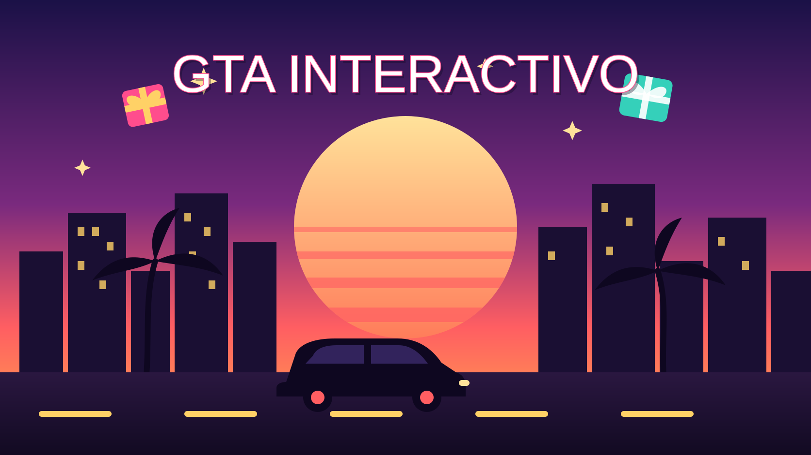

GTA Interactivo Beta
Juegas GTA V en modo historia y los regalos de tu live te ayudan o te molestan: te suben las estrellas de la policía, te tiran del cielo, o te dan armas, vida, un helicóptero o un deportivo. Aquí decides qué regalo hace qué. Funciona con la versión clásica y la Enhanced, en Steam, Epic y Rockstar.
- TikTok Live
- Aplicación conectada

TikTok Live
Vincula tu usuario de TikTok desde la sección "Juegos" del panel.
Tu juego
Sigue la guía de abajo. Aquí ves si la aplicación ya está lista y si detecta GTA V.
- Aplicación de Windows Sin conexión
- GTA V No detectado
Conecta tu GTA V: guía paso a paso
Son unos 3 minutos. No se instala nada dentro del juego: una pequeña aplicación escribe por ti los trucos que GTA V ya trae.
Funciona con
- GTA V para PC, versión clásica o Enhanced
- Steam, Epic Games o Rockstar Games Launcher
- Windows 10 y 11, en modo historia
No funciona con
- GTA Online: ahí los trucos no existen. No lo uses, podría poner en riesgo tu cuenta
- Consolas (PlayStation, Xbox), Mac o celular
- Con el juego en pausa, en un menú o con el teléfono abierto: el truco no entra
Importante: usar trucos en GTA V desactiva los logros de esa partida (solo en modo historia, no afecta tu cuenta). Te recomendamos probar con una partida guardada que no te importe.
-
1
Descarga la aplicación
Descargar aplicación (InteraktikGTA.exe)
Guárdala donde quieras, por ejemplo en el Escritorio. No necesita instalación.
Si Windows muestra «Windows protegió su PC», pulsa Más información y luego Ejecutar de todas formas. Aparece porque la aplicación es nueva y no tiene firma digital; solo escribe teclas en GTA V.
-
2
Pega tu llave en la aplicación
Ábrela, pega esta llave en el cuadro y pulsa Conectar. Se guarda: la próxima vez solo la abres y se conecta sola.
Si regeneras la llave, la anterior deja de funcionar y tendrás que pegar la nueva en la aplicación.
-
3
Comprueba que quedó conectada
En la aplicación aparece «Conectada ✔» y, arriba en esta página, «Aplicación de Windows» pasa a Conectada.
-
4
Abre GTA V en modo historia
Abre GTA V como siempre, entra a modo historia y carga una partida. Deja la aplicación abierta (puede estar minimizada). Cuando el juego esté abierto, aquí «GTA V» pasa a Detectado.
Juega en pantalla completa sin bordes o en ventana para que puedas cambiar de programa sin que el juego se minimice. Si GTA V está abierto «como administrador», abre también la aplicación como administrador (clic derecho → Ejecutar como administrador).
-
5
Conecta tu TikTok y crea tus reglas
Arriba pulsa Conectar en «TikTok Live» y abajo crea reglas: eliges un regalo y lo que hace en tu juego. Usa Probar y vuelve a la ventana de GTA V: la aplicación escribe el truco en cuanto el juego esté en primer plano (espera hasta 20 segundos).
Algo no funciona
- La aplicación dice «llave no válida»: copia la llave de nuevo desde esta página (si regeneraste la llave, la anterior ya no sirve).
- Sigue en «Sin conexión»: revisa tu conexión a internet y que no tengas la aplicación abierta dos veces.
- Conectada pero el truco no se ejecuta: asegúrate de estar en modo historia, sin menús ni teléfono abiertos, y con la ventana de GTA V al frente. Si GTA V corre como administrador, abre la aplicación también como administrador.
- Algunos trucos no hacen nada: varios trucos no se pueden activar durante misiones o escenas. Prueba en el mundo libre.
- En la aplicación hay un recuadro «Abrir consola con ~»: déjalo activado. Si tu teclado no tiene esa tecla (a la izquierda del 1), desactívalo y prueba de nuevo.
Reglas de regalos
Cada regalo dispara una acción en tu juego. En «Subir nivel de búsqueda» un combo suma estrellas: 3 rosas de «1 estrella» suben 3.